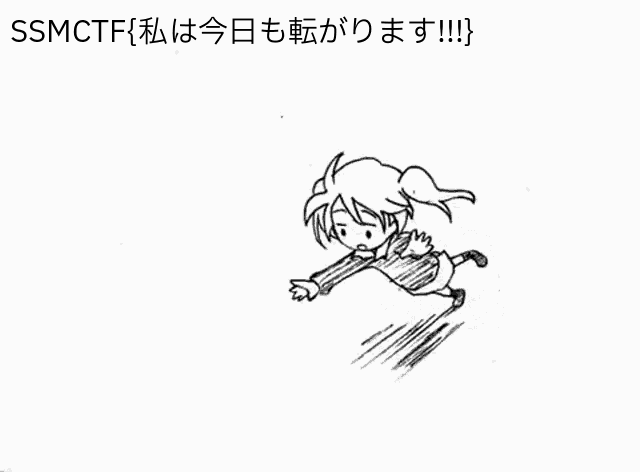

wrenches.online
i helped set some challenges for ssmctf. here are writeups for the ones that got very few solves. in order these are rev/cholesterol, web/ggguhhhh, web/lainlogs, rev/unsatisfactory, crypto/triple-baka,
crypto/milk, misc/ouroboros, forens/rolling-girl. overall i think the ctf went well and im glad to have contributed some challenges. wouldve loved to see more solves on some of these though!
the song for today is laputa by panchiko.
forens/rolling-girl, 11 solves
first of all rest in peace wowaka. you're given a large .zstd file, and the code used to generate it. here's that code.
import gzip
from tqdm import tqdm
import random
import zstandard as zstd
gif = bytearray(open('rolling-girl.gif', 'rb').read())
flag_gif = bytearray(open('flag.gif', 'rb').read())
# flag is just the gif with the flag overlaid
# no steganography, so don't try it!
# this is just to merge the two gifs' color palettes together
# it's not challenge relevant
flag_header = flag_gif[:0x320]
normal_header = gif[:0x320]
header = bytearray()
for a, b in zip(flag_header, normal_header):
if a == b:
header.extend(a.to_bytes())
if a != b:
if a == 0:
header.extend(b.to_bytes())
else:
header.extend(a.to_bytes())
images = gif[0x320:-1]
flag_images = flag_gif[0x320:-1]
trailer = b';'
iterations = 1000000
flag_iteration = random.randint(0, 5000) # you're welcome
output_file = 'infiniroll.gif.zst'
cctx = zstd.ZstdCompressor()
with open(output_file, 'wb') as fh:
with cctx.stream_writer(fh) as compressor:
compressor.write(header)
for i in tqdm(range(1, iterations)):
compressor.write(images)
if i == flag_iteration:
print('Writing flag...')
compressor.write(flag_images)
compressor.write(trailer)
we are repeatedly warned not the unzip the entire file as it is very large. the code essentially copy and pastes a gif together, adding more and more loops until it becomes extremely massive (500gb). there is a single iteration where the gif is showing the flag instead, and we need to recover it. as an aside, the reason .zstd was used was because an incredibly efficient compression method was needed to be able to squeeze the file into a reasonable size to handout to players, and the regular, familiar compression methods were simply not cutting it.
we can start by decompressing the file in streams, and parsing each frame of the gif. streaming will help us parse the file using a reasonable amount of resources (we obviously cannot load the entire file into memory), and if we can parse the frames one by one we should be able to identify the frame of the gif that contains the flag by checking to see if it is different from all the rest.
my intent w writing the chall was to force the solver to write their own bespoke streamed gif parser, so that's what i did. i personally did not research to see if there is any library out there that already does this but i cannot possibly imagine there is, feel free to @ me if i am wrong. the forensics part of this challenge is to understand the file format of a .gif, and how its frames are stored as data. let's go over that now.
this resource was very useful to me in the writing of this challenge. i'm going to grossly simplify it. simply put, there is a GIF header which contains metadata like image dimensions and color palette (these files use indexed color palettes, so the color palette is essentially stored as an array that is 'indexed into' by the image data).
from the code provided we can see that the first 0x320 bytes are the gif header, so good thing that's taken care of for us. we can then begin parsing the individual frames. so far note that we do not call .read() on the entire file, and instead selectively load in the specific number of bytes we want.
from zstandard import zstd
with zstd.open('infiniroll.gif.zst', 'rb') as file: # streamed decompression
header = file.read(0x320)
all image descriptors start with the bytes 0x2c. we might expect that the next byte after reading our header will therefore finally be image data, but nope - it starts with a 0x21, which we learn is part of the graphics control extension, an 8-byte long string of metadata. we read and discard it.
from zstandard import zstd
with zstd.open('infiniroll.gif.zst', 'rb') as file: # streamed decompression
header = file.read(0x320)
gce = file.read(0x08)
now this is where the actual image parsing begins - the 10 byte long image descriptor, and the following are all image blocks. the image data is encoded in blocks which have a maximum size of 0xFF, and the 2nd byte in each block is that given size. once we reach a sub-block whose size is 0x00, we'll know there are no more blocks left in the image.
import zstandard as zstd
from hashlib import md5
from tqdm import tqdm
hashes = set()
with zstd.open('infiniroll.gif.zst', 'rb') as file: # streamed decompression
header = file.read(0x320)
# image parser
for i in tqdm(range(1, 100000)):
gce = file.read(0x08)
image_desc = file.read(0xa)
lzw = file.read(0x01)
image_data = gce + image_desc + lzw
all_frames_gathered = False
while not all_frames_gathered:
block_size = file.read(0x01)
block_data = file.read(int.from_bytes(block_size))
image_data += block_size + block_data
if int.from_bytes(block_size) == 0:
all_frames_gathered = True
imagehash = md5(image_data).hexdigest()
if imagehash not in hashes:
print(f' {i} found image hash...')
hashes.add(imagehash)
the code collects all the necessary gif data, and then computes the hashes. now a few things i handwaved over:
the graphics control extension exists in every image block, so does the image description and the additional lzw compression byte. those are, for our purposes, basically auxiliary gif headers and therefore irrelevant to the block collection. when running this code we see that the first 50 frames or so are unique, and then they all repeat, and then somewhere around the 80000k mark we get completely new hashes - this is a good sign!
all that's left is to write a new gif with the necessary image data. we need to append our gif header, our image data, and importantly, the gif trailer which is a single ';' byte:
if i > 80000 and imagehash not in hashes:
image_data = header + image_data + b';'
print(image_data)
with open('burnsolve.gif', 'wb') as f:
f.write(image_data)
f.close()
exit()
running this, we get our flag image. 
author's notes: first of all, i fucking love wowaka. stream unhappy refrain. second of all, i'm always a fan of learning more about file formats, and the gif file format, as ancient and inefficient as it is, was really fun to dig into. i hope my solvers also thought it was fun. i think there's even more you can do w this challenge that involves parsing the .zstd itself and finding potential offsets the flag could be buried at, but i wanted to make it a bit simpler. i'm also surprised at how inefficient compression algorithms are with a file like this - even the .zstd itself is far larger than it should be, with a lot of repeated chunks if you pore into the actual hexdigest.
crypto/triplebaka, 9 solves
this challenge is about extrapolating an lcg far beyond what is feasibly calculatable using modular arithmetic and fermat's little theorem nonsense. the source is as follows:
from Crypto.Util.number import getPrime, bytes_to_long
from math import log2, floor
flag = "SSMCTF{??????????}" # number of ?s not necessarily accurate
secret = bytes_to_long(flag.encode('utf-8'))
bits = floor(log2(secret) + 1)
def baka(ba, ka):
bakabaka = ba
for bakabakabaka in range(ka-1):
bakabaka = ba**bakabaka
return bakabaka
def hyperbaka(ba, ka, bakabaka):
if bakabaka == 1:
return ba**ka
elif ka == 0:
return 1
elif bakabaka == 2 and ba == ka:
return baka(ba, bakabaka)
else:
bakabakabaka = hyperbaka(ba, ka-1, bakabaka)
return hyperbaka(ba, bakabakabaka, bakabaka-1)
def triple_baka(n):
if n == 1:
return hyperbaka(3, 3, 4)
else:
return hyperbaka(3, 3, triple_baka(n-1))
TRIPLE_BAKA = triple_baka(64)
a = getPrime(bits // 2) + 1
b = getPrime(bits // 2)
x = getPrime(bits // 2)
m = getPrime(bits)
def get_next():
global x
x = (a * x + b) % m
print(f'{bits = }')
for i in range(1, TRIPLE_BAKA + 1):
get_next()
if i <= 10:
print(i, x)
ct = secret ^ x
print(f'{ct = }')
# 1 10275910798653121436396833379154598008161
# 2 2068591239728841545706452127889450693176
# 3 26350147429806384823786121899280661716493
# 4 25358475244916002220884659082517978530071
# 5 12563752780567442975545946639227178025296
# 6 19642601882956204519785723889340847589962
# 7 6259116168994041128833294897342371591968
# 8 16406333604491605091556863399044907242384
# 9 25867766060185127305007083226436225587634
# ct = 8194779757417092844428719009359907728048
astute solvers might realise that triple-baka is actually just Graham's number computed via hyperoperations. we're given an LCG and we need to compute the graham's number-th iteration of the LCG to recover our plaintext. obviously we can't compute G64 iterations of an LCG, so we need to find some closed form for the nth term of an LCG. you can either derive it yourself (frankly i'm too dumb to) or find a resource online that already has it derived for you, i found one on this blog.
the closed form listed on that site requires us to calculate a to the power of n mod m, where a and m are LCG parameters and N is graham's number. how do we do this? recall that a ^ phi(m) is 1 mod m, and following from this a ^ (N mod (phi m)) is congruent to a ^ N mod m. here the problem reduces to solving for N mod phi m. m is small enough to factor so calculating phi(m) is trivial, but how do we then find graham's number mod phi(m)?
[todo]
crypto/milk, 3 solves
this is ECC. we're given two Montgomery curves, a random point on each curve and the result of multiplying that random point by some secret scalar that we need to recover.
from Crypto.Util.number import getPrime, bytes_to_long, long_to_bytes
import random
class EC:
def __init__(self, a, b, p):
self.a = a
self.b = b
self.p = p
# the double-and-add is implemented correctly
def add(self, P, Q):
if P is None:
return Q
if Q is None:
return P
x1, y1 = P
x2, y2 = Q
if x1 == x2 and y1 != y2:
return None
if P == Q:
lam = (3 * x1**2 + self.a) * pow(2 * y1, -1, self.p) % self.p
else:
lam = (y2 - y1) * pow(x2 - x1, -1, self.p) % self.p
x3 = (lam**2 - x1 - x2) % self.p
y3 = (lam * (x1 - x3) - y1) % self.p
return (x3, y3)
def multiply(self, P, n):
R = None
Q = P
while n:
if n & 1:
R = self.add(R, Q)
Q = self.add(Q, Q)
n >>= 1
return R
def get_random_point(self):
import random
while True:
p = self.p
x = random.randint(0, p - 1)
n = (pow(x, 3, self.p) + self.a * x + self.b) % p
if pow(n, (p - 1) // 2, p) != 1:
continue
# don't freak out this is just tonelli shanks and it is indeed implemented properly
q, s = p - 1, 0
while q % 2 == 0:
q //= 2
s += 1
z = 2
while pow(z, (p - 1) // 2, p) == 1:
z += 1
m, c, t, r = s, pow(z, q, p), pow(n, q, p), pow(n, (q + 1) // 2, p)
while t != 1:
i, temp = 0, t
while temp != 1:
temp = pow(temp, 2, p)
i += 1
b = pow(c, 2 ** (m - i - 1), p)
m, c, t, r = i, (b * b) % p, (t * b * b) % p, (r * b) % p
y = r
return (x, y)
# secure, standard curves used very often in ECC
# the parameters are all correct, if you want to check them
curve_25519_p = 0x7fffffffffffffffffffffffffffffffffffffffffffffffffffffffffffffed
curve_25519_a = 0x76d06
curve_25519_b = 0x01
M_221_p = 0x1FFFFFFFFFFFFFFFFFFFFFFFFFFFFFFFFFFFFFFFFFFFFFFFFFFFFFFD
M_221_a = 0x01c93a
M_221_b = 0x01
curve_25519 = EC(curve_25519_a, curve_25519_b, curve_25519_p)
M_221 = EC(M_221_a, M_221_b, M_221_p)
G1 = curve_25519.get_random_point()
G2 = M_221.get_random_point()
k = getPrime(200)
pt1, pt2 = curve_25519.multiply(G1, k), M_221.multiply(G2, k)
# flag encryption
import hashlib, os
from Crypto.Cipher import AES
from Crypto.Util.Padding import pad, unpad
from secret import FLAG
def encrypt_flag(secret: int):
sha1 = hashlib.sha1()
sha1.update(str(secret).encode('ascii'))
key = sha1.digest()[:16]
iv = os.urandom(16)
cipher = AES.new(key, AES.MODE_CBC, iv)
ciphertext = cipher.encrypt(pad(FLAG, 16))
return iv.hex(), ciphertext.hex()
iv, ct = encrypt_flag(k)
print(f'{G1 = }\n{G2 = }')
print(f'{pt1 = }\n{pt2 = }')
print(f'{iv = }, {ct = }')
#G1 = (47063170801806052288146673528871417153526850064394483981146410830175982208544, 53518176899357161526249489715124114639791104549020667616657543916324221249348)
#G2 = (44463004732374493397893178641833179486751816974247573994673798864, 1106794713284151358838640453450775713656116663772692522843863128471)
#pt1 = (56710714175061483991870664898200691885016604747806913517177632746453560406455, 22183016490403262414869646241566186015038886824498859131560775826194154678831)
#pt2 = (861801353887926730429905301581104022799000762265859378776929570795, 2414525705848701236524399200022909146362752492100235869363750117869)
#iv = 'c001a9fe49c5eaee271777f7deac8eb8', ct = '12068639a25f527caf97b8f8572723571ebf212cf673e71b5e705f99404cc50e97a5dbbde566ea52fde3bf8caaede3629ede5731bb4340c27a6b352636546f02'
i'll just cut to the chase on the vuln here: my EC class implements it in Weierstrass form, but the curves used are Montgomery curves. the correct parameters on the wrong curve form results in significantly weaker curves whose orders can be factorised in around 10 minutes or so, and from there, you can just do standard pohlig-hellman. note that some of the factors in the curves are still too big to calculate discrete logarithms on, so we can only recover around 180~ bits of k in a feasible amount of time. but from there, we can just brute force values of k that would work. this writeup is not very detailed because i kind of dont feel like it. these ideas are explained better in this writeup, where a lot of the ideas are similar (i referenced it a lot while making this challenge). but my solve script is here:
from sage.all import *
from tqdm import tqdm
G1 = (47063170801806052288146673528871417153526850064394483981146410830175982208544, 53518176899357161526249489715124114639791104549020667616657543916324221249348)
G2 = (44463004732374493397893178641833179486751816974247573994673798864, 1106794713284151358838640453450775713656116663772692522843863128471)
pt1 = (56710714175061483991870664898200691885016604747806913517177632746453560406455, 22183016490403262414869646241566186015038886824498859131560775826194154678831)
pt2 = (861801353887926730429905301581104022799000762265859378776929570795, 2414525705848701236524399200022909146362752492100235869363750117869)
p1 = 57896044618658097711785492504343953926634992332820282019728792003956564819949
a1 = 486662
b1 = 0x01
p2 = 0x1FFFFFFFFFFFFFFFFFFFFFFFFFFFFFFFFFFFFFFFFFFFFFFFFFFFFFFD
a2 = 0x01c93a
b2 = 0x01
curve1 = EllipticCurve(GF(p1), [a1, b1])
order1 = 57896044618658097711785492504343953926446781469004112725498288261235695923132
curve2 = EllipticCurve(GF(p2), [a2, b2])
order2 = curve2.order()
G1 = curve1(G1)
pt1 = curve1(pt1)
G2 = curve2(G2)
pt2 = curve2(pt2)
# it's actually kind of slow to factorise shit with sage, so i just plugged this into an online factoriser
# and it spat out these factors. the factorisation is incomplete and these primes only give around 183 bits
# of info on our secret scalar
factors1 = [107, 227, 2988429752821, 20521106721679]
factors2 = [3, 3562267, 844201807, 1475029691]
crt_factors = []
crt_solutions = []
val = 1
for f in factors1:
print("Trying factor", f)
P_0 = (order1 // f) * G1
Q_0 = (order1 // f) * pt1
crt_sol = Q_0.log(P_0)
crt_factors.append(f)
crt_solutions.append(crt_sol)
print(crt_sol, f)
val *= f
for f in factors2:
print("Trying factor", f)
P_0 = (order2 // f) * G2
Q_0 = (order2 // f) * pt2
crt_sol = Q_0.log(P_0)
crt_factors.append(f)
crt_solutions.append(crt_sol)
print(crt_sol, f)
val *= f
d = crt(crt_solutions, crt_factors)
print(f'{d = }')
print(f'{val = }')
# brute force the remaining 17 bits
for i in tqdm(range(2**17)):
z = d + val * i
if z * G1 == pt1:
print(z)
break
web/gguhh, 10 solves
it's a Go app and the goal is to achieve XSS. there's a homebrew sanitiser that replaces all characters into full stops if they're not the characters g, u, h. our goal here is to bypass the sanitiser. the relevant bits of code are below:
func ghgughuhhhhgHandler(w http.ResponseWriter, r *http.Request) {
if r.Method != http.MethodPost {
http.Redirect(w, r, "/posts/new", http.StatusSeeOther)
return
}
id := randSeq(10)
title := r.FormValue("title")
content := r.FormValue("content")
createdAt := time.Now()
if len([]rune(content)) > 32767 {
http.Error(w, "Too much data, needs to fit an int16...", http.StatusInternalServerError)
return
}
_, err := db.Exec(
"INSERT INTO posts (id, title, length, content, created_at) VALUES (?, ?, ?, ?, ?)",
id, title, len(content), content, createdAt.Format(time.RFC3339),
)
if err != nil {
http.Error(w, "Insert error", http.StatusInternalServerError)
return
}
go sendToPuppeteer(id)
http.Redirect(w, r, "/posts/"+id, http.StatusSeeOther)
}
func hhhgguuhhhHandler(w http.ResponseWriter, r *http.Request) {
parts := strings.Split(r.URL.Path, "/")
if len(parts) != 3 {
http.NotFound(w, r)
return
}
id := parts[2]
var post Post
var postID string
var postTitle string
var postLength int
var postContent string
var createdAtStr string
row := db.QueryRow("SELECT id, title, length, content, created_at FROM posts WHERE id = ?", id)
err := row.Scan(&postID, &postTitle, &postLength, &postContent, &createdAtStr)
if err == sql.ErrNoRows {
http.NotFound(w, r)
return
} else if err != nil {
http.Error(w, "Database error: " + err.Error(), http.StatusInternalServerError)
return
}
post.ID = postID
post.Title = postTitle
post.Length = int16(postLength)
post.Content = hhhhhhghghughguhContent(postContent, post.Length)
post.CreatedAt, _ = time.Parse(time.RFC3339, createdAtStr)
templates.ExecuteTemplate(w, "post.html", post)
}
func hhhhhhghghughguhContent(content string, length int16) string {
contentRunes := []rune(content)
for i := 0; i < int(length) && i < len(contentRunes); i++ {
r := contentRunes[i]
if r != 'u' && r != 'g' && r != 'h' && r != 'U' && r != 'G' && r != 'H' {
contentRunes[i] = '.'
}
}
return string(contentRunes)
}
there is some weird typecasting and rune shit immediately present upon inspection of the code. indeed, this challenge is about two things: some characters are multibyte characters that take up more than one byte of space due to their unicode values being greater than 256, and if you give Go an integer bigger than an int16 it will just silently truncate the integer to its bottom 16 bits. i will now elaborate on the first thing.
the standard set of printable ascii characters ' !"#$%&\'()*+,-./0123456789:;<=>?@ABCDEFGHIJKLMNOPQRSTUVWXYZ[\\]^_`abcdefghijklmnopqrstuvwxyz{|}~' are all represented by the integers 32 through 126, which are numbers that can fit in a byte. but due to our best friends over at the Unicode Consortium, an organisation i spend a lot of time trying to mentally explode w/ my mind, some characters take up more than one byte of space, such as say, 风和日丽的早上. the character for 风 has a codepoint of 39118, a value which needs two bytes.
>>> ord('风')
39118
>>> len('风')
1
>>> ord('风').bit_length()
16
the issue with writing any programming language where we deign to do something as bold and arrogant as 'calculating the length of a string' invariably falls into the issue of parsing multibyte characters such as these. because very obviously, 风 is just one character, and so it makes sense to treat the string '风' as having length 1. but it occupies two bytes of space, and the very natural solution of just taking the number of bytes in the string predictably fails. back to the challenge. how does our beloved Go deal with multibyte chars?
Go introduces the rune, which is essentially just an int32. every character is converted to a rune, and we calculate how many runes there are in each string. note that Go actually only does this if you explicitly tell it to, such as in the following code snippet from our challenge source:
if len([]rune(content)) > 32767 {
http.Error(w, "Too much data, needs to fit an int16...", http.StatusInternalServerError)
return
}
here we see that we're dealing with rune representations. when we don't deal with rune representations, Go simply just takes the number of bytes in the string, such as if you call len(content). the key to this challenge is that Go will return different values for len(content) and len([]rune(content)), and our challenge checks if len([]rune(content)) is less than 32767, but inserts len(content) into the database. our primitive here (of sorts) is that we can get these values to mismatch by inserting multibyte chars. why is this relevant?
func hhhhhhghghughguhContent(content string, length int16) string {
contentRunes := []rune(content)
for i := 0; i < int(length) && i < len(contentRunes); i++ {
r := contentRunes[i]
if r != 'u' && r != 'g' && r != 'h' && r != 'U' && r != 'G' && r != 'H' {
contentRunes[i] = '.'
}
}
return string(contentRunes)
}
the sanitiser behaves weirdly in that it accepts an int16 length that is specified independently from the content string itself. we can look at where length actually comes from in the code.
post.ID = postID
post.Title = postTitle
post.Length = int16(postLength)
post.Content = hhhhhhghghughguhContent(postContent, post.Length)
post.CreatedAt, _ = time.Parse(time.RFC3339, createdAtStr)
templates.ExecuteTemplate(w, "post.html", post)
very curiously we cast postLength (recall that that is len(post.content)) as an int16.